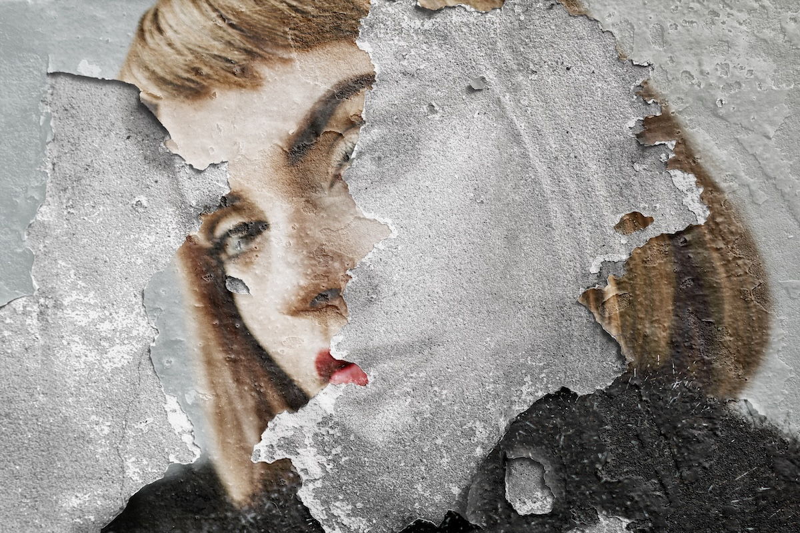

Sosyal Medyada 2026 Fotoğraf Estetiği: Neden ‘Kusurlu’ Fotoğraflar Daha Çok Tutuyor?
Son yıllarda sosyal medya platformlarında fotoğraf estetiği köklü bir değişim geçiriyor. Bir zamanların kusursuz ışıklandırılmış, ağır filtreli ve profesyonel çekim hissi veren kareleri artık eskisi kadar ilgi görmüyor. 2026 itibarıyla kullanıcıların dikkatini çeken ve etkileşim alan içerikler; daha ham, daha doğal ve hatta teknik olarak “kusurlu” sayılabilecek fotoğraflar oluyor. Bu durum yalnızca geçici bir trend değil, dijital kültürde yaşanan daha büyük bir dönüşümün yansıması.
Bu yazıda, 2026 fotoğraf estetiğinin neden kusurlu görüntülere yöneldiğini, bunun arkasındaki psikolojik ve kültürel nedenleri ve bu estetiğin sosyal medyada nasıl etkili kullanılabileceğini detaylı şekilde ele alıyoruz.
Kusurlu Fotoğraf Estetiği Nedir?
Kusurlu fotoğraf estetiği; geleneksel fotoğraf kurallarının bilinçli olarak esnetildiği, hatta zaman zaman tamamen göz ardı edildiği bir yaklaşımı ifade eder. Bu estetik anlayışında fotoğrafın “mükemmel” olması değil, “gerçek” olması önemlidir.
Bu tarz fotoğraflarda sıkça şu unsurlar görülür:
- Hafif bulanıklık veya netlik kaybı
- Doğal ve kontrolsüz ışık
- Film grenleri ve parazitler
- Asimetrik veya rastgele kompozisyonlar
- Filtre kullanılmadan paylaşılan kareler
Bu görüntüler izleyiciye planlanmış bir sahne yerine, anın içinden yakalanmış bir kesit hissi verir. Tam da bu nedenle daha samimi algılanır.
2026’da Kusurlu Fotoğraflar Neden Daha Çok Tutuyor?
Gerçeklik ve Samimiyet İhtiyacı
Sosyal medya kullanıcıları yıllarca idealize edilmiş hayatlara, kusursuz bedenlere ve filtrelenmiş yüzlere maruz kaldı. Bu durum zamanla bir doygunluk yarattı. 2026’ya gelindiğinde kullanıcıların büyük bir bölümü artık kendine benzeyen, hataları olan ve gerçek hayata daha yakın içerikler görmek istiyor. Kusurlu fotoğraflar bu ihtiyaca doğrudan cevap veriyor.
Algoritmaların Değişen Öncelikleri
Başta Instagram olmak üzere pek çok platform, kullanıcıyı platformda daha uzun süre tutacak içerikleri öne çıkarmayı hedefliyor. Ham ve doğal fotoğraflar, “reklam gibi” görünmedikleri için daha fazla duraksama ve etkileşim yaratıyor. Bu da algoritmalar tarafından olumlu sinyal olarak algılanıyor.
Dijital Mükemmelliğe Karşı Tepki
Her şeyin kusursuz göründüğü bir dijital dünyada, kusur dikkat çekici bir unsur haline geliyor. Hafif eğri bir kadraj ya da fazla karanlık bir ışık, izleyicinin gözünde fotoğrafı daha “insani” yapıyor. Bu da içeriğin akılda kalıcılığını artırıyor.
Duygusal Bağ ve Hikâye Anlatımı
Kusurlu fotoğraflar genellikle daha güçlü bir hikâye hissi taşır. Çünkü bu kareler poz verilmiş anlardan çok, yaşanmış anlara benzer. İzleyici bu tür fotoğrafları kendi deneyimleriyle daha kolay ilişkilendirir ve bu da duygusal bağ kurmayı kolaylaştırır.
Kusurlu Estetiğin Psikolojik Arka Planı
Psikolojik açıdan bakıldığında insanlar, kendilerine benzer olan şeylere daha fazla güvenir. Aşırı düzenlenmiş fotoğraflar bilinçaltında “pazarlama” hissi uyandırırken, kusurlu fotoğraflar daha az savunma mekanizmasını tetikler. Bu durum, özellikle kişisel hesaplar ve içerik üreticileri için etkileşim oranlarını doğrudan etkiler.
Ayrıca kusurlu estetik, kontrolsüzlük hissi sayesinde daha özgür bir algı yaratır. İzleyici, içeriğin üretim sürecine değil, içerdiği duyguya odaklanır.
Sosyal Medyada Kusurlu Fotoğraf Estetiği Nasıl Uygulanır?
Doğal Işıktan Yararlan
Yapay ışıklar yerine gün ışığı, gölgeler ve ışık kırılmaları kullanmak fotoğrafa derinlik kazandırır. Işığın her zaman “doğru” olmasına gerek yoktur.
Anı Yakala, Poz Verdirmeye Zorlama
Hareket halindeki anlar, gülüşler, yürüyüşler veya küçük detaylar kusurlu estetiğin temelini oluşturur. Fotoğrafın biraz bulanık olması sorun değil, hatta çoğu zaman avantajdır.
Minimal Düzenleme Yap
Aşırı kontrast, keskinlik ve renk doygunluğu kusurlu estetiğin ruhuna aykırıdır. Düzenleme yaparken fotoğrafın doğal hatalarını tamamen yok etmeye çalışma.
Analog ve Film Hissi Veren Dokular Kullan
Film grenleri, soluk renkler ve hafif renk kaymaları fotoğrafa nostaljik bir hava katar ve dijital soğukluğu kırar.
Markalar ve İçerik Üreticiler İçin Anlamı
2026’ta kusurlu estetik, markalar için daha “insan” bir iletişim dili anlamına geliyor. Ürünü kusursuz göstermekten çok, ürünün gerçek hayattaki kullanım anlarını göstermek daha etkili hale geliyor. Bu yaklaşım, özellikle küçük markalar ve bireysel üreticiler için büyük bir avantaj sağlıyor.
Sonuç
2026 fotoğraf estetiğinde kusurlu fotoğraflar bir moda akımı olmanın ötesine geçmiş durumda. Bu yaklaşım, dijital dünyada gerçeklik, samimiyet ve duygusal bağ arayışının bir yansıması. Kullanıcılar artık teknik mükemmellikten çok, kendilerinden bir parça bulabildikleri içeriklere değer veriyor.
Sosyal medyada öne çıkmak isteyen herkes için mesaj net: Kusursuz olmaya çalışma, gerçek olmaya odaklan.